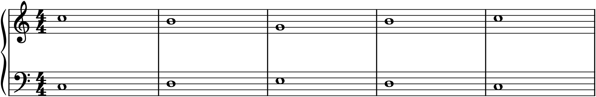
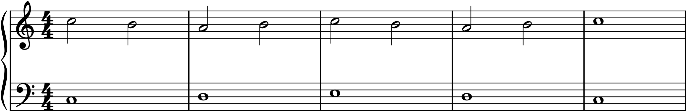

Almost all the music so far has been homophonic: a melody on top, supported by harmony beneath — a leader and its accompaniment. Counterpoint is the other great way to combine sounds, and in some ways the deeper one: two or more independent melodic lines, each satisfying on its own, woven together so that they also make sense harmonically. Where homophony has one melody and a support, counterpoint has several melodies at once. This is the art that underlies all writing for ensembles — because when you write for two instruments, or four, you want each player to have a real line, not merely a filler part — and this chapter is a practical primer in it. We use the old training method, species counterpoint, not as an academic ritual but as the most efficient way there is to train your ear and hand to make independent lines that fit.
28.1What counterpoint is
Counterpoint (from punctus contra punctum, “point against point” — note against note) is the combination of two or more lines that are melodically independent yet harmonically compatible. Each line has its own shape, its own contour and rhythm, so that if you played any one alone it would be a real melody; and yet together they form consonant harmony at each moment. The texture of many voices moving independently is called polyphony, and it is the sound of a Bach fugue, a Renaissance motet, a well-written string quartet. The challenge — and the pleasure — is that you are composing horizontally (each line as a melody) and vertically (the harmony between them) at the same time.
28.2The cantus firmus and species
The traditional way to learn this, systematized in the eighteenth century (in Fux’s famous treatise, from which Haydn, Mozart, and Beethoven all learned), is beautifully simple. You are given a slow, fixed melody in whole notes called the cantus firmus (Latin for “fixed song”), and you write a new line — the counterpoint — against it, under strict rules. The rules are introduced in graded stages called species, each adding rhythmic activity: first species is note against note; second species, two notes against one; and later species add more notes and syncopation. By working up through the species, you learn to handle consonance, dissonance, and independent motion one difficulty at a time. We will cover the first two, which contain the essential lessons.
28.3First species: note against note
In first species, you write one note against each note of the cantus firmus — the plainest counterpoint, and the foundation of everything. Its rules distill the voice-leading principles of Chapter 14 to their essence:
- Use only consonances between the two lines — thirds, sixths, fifths, octaves, and unisons. Every vertical interval must be consonant, since there are no weak beats to hide a dissonance on.
- Prefer imperfect consonances — thirds and sixths — which sound full and independent, over the hollow perfect fifths and octaves.
- Begin and end on a perfect consonance (unison, fifth, or octave), for stability; the final should approach the tonic by step, the leading tone rising to it.
- Never write parallel fifths or octaves (Chapter 14 again), and favour contrary motion — the lines moving in opposite directions — which is what most keeps them independent.

Study Figure 28.1 as both harmony and melody. Vertically, every pair of notes is a consonance, framed by perfect intervals at the ends. Horizontally, each line arches gently and mostly by step. And the two move against each other — when the cantus firmus rises, the counterpoint tends to fall — which is exactly what lets the ear hear them as two voices rather than one.
28.4Second species: two against one
Second species puts two notes in the counterpoint against each note of the cantus firmus, and with that extra note comes the first taste of controlled dissonance. The note on the strong beat must still be consonant, but the note on the weak beat may be dissonant — provided it is a passing tone (Chapter 16): approached and left by step, in the same direction, passing smoothly between two consonances.

The passing dissonances in Figure 28.2 are the point: they are the first place counterpoint allows a clash, and they are allowed precisely because they are passing — momentary, on a weak beat, resolving by step into the next consonance. This is the same non-chord-tone principle from Chapter 16, now heard as the friction between two independent lines. Later species extend the idea — more notes per beat, and the syncopated suspensions of fourth species — but the lesson is already here: dissonance is permitted when it is prepared, weak, and resolved.
28.5The principle of independence
Everything in species counterpoint serves one goal: two lines that are each a melody and yet fit together. Notice how many of its rules you have met before as voice-leading rules in Chapter 14 — no parallel fifths or octaves, favour contrary motion, resolve the leading tone — because they are the same rules, seen from a different angle. Four-part chorale writing and two-part counterpoint are two faces of one skill: making independent voices coexist. Counterpoint simply strips it to the barest case — two lines, no accompaniment to hide behind — which is why it trains the ear so efficiently. Rhythmic independence (the voices moving at different times), melodic independence (different contours), and directional independence (contrary motion) all keep the lines distinct, and distinctness is the whole art.
28.6Using counterpoint
Species exercises are training, not the destination — you will rarely write literal first-species counterpoint in a real piece. But the skill they build is everywhere in good writing. A bass line that is itself a melody, walking purposefully under the tune, is counterpoint. An inner voice with a life of its own, rather than mere filler, is counterpoint. Two instruments trading and overlapping phrases in dialogue is counterpoint. And two specific devices are worth naming: imitation, where one voice echoes a figure just stated by another (the opening of a fugue, or a round like “Frère Jacques”), and its strict form the canon, where one voice copies another exactly throughout. When you write for two instruments in the next chapter, you will reach for all of this — because giving each player a real, independent line is precisely what counterpoint teaches.
In MuseScore
Counterpoint is best practised by writing two lines and checking each both alone and together — which MuseScore makes easy.
- Set up two lines: use a grand staff (counterpoint above, cantus firmus below) or two instruments. Enter the cantus firmus in whole notes, then write your counterpoint against it.
- Check the harmony by clicking any two simultaneous notes: MuseScore names each pitch in the status bar (§1.3), so you can confirm the interval is consonant. Watch the outer motion for parallel fifths and octaves, exactly as in Chapter 14.
- Check the independence by isolating each line with the Selection Filter (F6) or by muting one staff in the Mixer — play each line alone and make sure it is a real melody, then play them together.
- Favour contrary motion: when you enter a rising cantus-firmus note, try a falling counterpoint note, and let your ear confirm the two feel independent.
Try it: enter the cantus firmus of Figure 28.1 — C, D, E, D, C in whole notes — and write your own first-species counterpoint above it, using only consonances, beginning and ending on an octave or fifth, and moving mostly contrary to the cantus firmus. Then add passing tones between your notes to turn it into second species, as in Figure 28.2. Play each line alone, then together: you will have written two independent melodies that fit — the core skill behind every ensemble you are about to compose for.